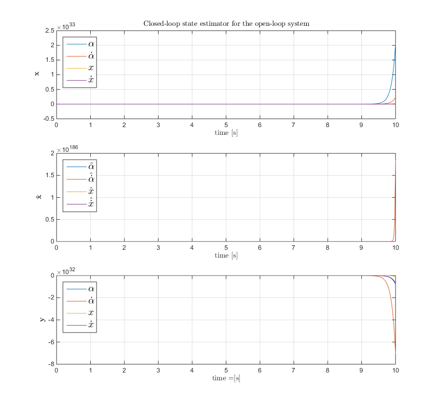

MinSeg Project - EE 547 (PMP) - Winter 2015
prepared by Christopher S Schulenberg, Paul Adams
Contents
Initialization
addpath('simulink') close all digits(3); set(0, 'defaultTextInterpreter', 'latex'); format shortG numerical_precision = 1e-5; syms a x I_p m_p L r_w I_w m_w r_w syms s k_t R V k_b
4.1 Dynamical Model of the MinSeg Robot
Step 2 Physical Parameters.
g = 9.80665; % [m/s^2] k_t = 0.3233; % [Nm/a] k_b = 0.4953; % [Vs/rad] R = 5.2628; % [Ohms] L = 0.11; % [m] - demonstrated balance point with 6 AA batteries m_brick_bat = 0.249; % measured in class m_wheel = 0.014; % measured in class m_motor = 117 - 2*m_wheel; m_p = m_brick_bat + m_motor; % [kg] - guess m_w = 2*m_wheel; % [kg] - guess r_w = 0.016; % [m] - 5/8", measured % assume a filled circular area (x2 for inertia of both wheels) I_w = m_w*r_w^2/2; % [kg-m^2] - http://en.wikipedia.org/wiki/List_of_moments_of_inertia h_p = 0.2; % [m] - height of pendulum, from top of PCB to wheel axis, measured % assuming a filled rectangular area %I_p = w_arduino*l_arduino^3/12; % [m^4] - http://en.wikipedia.org/wiki/List_of_area_moments_of_inertia % assuming rod length L and mass m %I_p = m_p * h_p^2 / 3; % [kg-m^2] - http://en.wikipedia.org/wiki/List_of_moments_of_inertia % assuming point mass I_p = m_p * L^2; % [kg-m^2] - http://en.wikipedia.org/wiki/Moment_of_inertia render_latex(['L = ' latex(vpa(L, 3)) ' [\textrm{m}]'], 12, 0.35) render_latex(['m_p = ' latex(vpa(m_p, 3)) ' [\textrm{kg}]'], 12, 0.35) render_latex(['I_p = ' latex(vpa(I_p, 3)) ' [\textrm{kg m}^2]'], 12, 0.35) render_latex(['m_w = ' latex(vpa(m_w, 3)) ' [\textrm{kg}]'], 12, 0.35) render_latex(['r_w = ' latex(vpa(r_w, 3)) ' [\textrm{m}]'], 12, 0.35) render_latex(['I_{cm,w} = ' latex(vpa(I_w, 3)) ' [\textrm{kg m}^2]'], 12, 0.35)


Step 1 State-space Matrices.
Arow12 = (g*L*m_p*(I_w + (m_p + m_w)*r_w^2))/(I_w*(I_p + L^2*m_p) + (L^2*m_p*m_w + I_p*(m_p + m_w))*r_w^2);
Arow22 = -k_b*k_t*(I_w + r_w*(m_w*r_w + m_p*(L + r_w)))/(R*(I_w*(I_p + L^2*m_p) + (L^2*m_p*m_w + I_p*(m_p + m_w))*r_w^2));
Arow24 = -k_b*k_t*(I_w + r_w*(m_w*r_w + m_p*(L + r_w)))/(R*r_w*(I_w*(I_p + L^2*m_p) + (L^2*m_p*m_w + I_p*(m_p + m_w))*r_w^2));
Arow41 = (g*L^2*m_p^2*r_w^2)/(I_w*(I_p + L^2*m_p) + (L^2*m_p*m_w + I_p*(m_p + m_w))*r_w^2);
Arow42 = -k_b*k_t*r_w*(I_p + L*m_p*(L + r_w))/(R*(I_w*(I_p + L^2*m_p) + (L^2*m_p*m_w + I_p*(m_p + m_w))*r_w^2));
Arow44 = -k_b*k_t*(I_p + L*m_p*(L + r_w))/(R*(I_w*(I_p + L^2*m_p) + (L^2*m_p*m_w + I_p*(m_p + m_w))*r_w^2));
A = [0, 1, 0, 0; Arow12, Arow22, 0, Arow24; 0, 0, 0, 1; Arow41, Arow42, 0, Arow44];
render_latex(['A = ' latex(vpa(A, 3))], 10, 1)
Brow2 = -(k_t*(I_w + r_w*(m_w*r_w + m_p*(L + r_w))))/(R*(I_w*(I_p + L^2*m_p) + (L^2*m_p*m_w + I_p*(m_p + m_w))*r_w^2));
Brow3 = -(k_t*r_w*(I_p+ L*m_p*(L + r_w)))/(R*(I_w*(I_p + L^2*m_p) + (L^2*m_p*m_w + I_p*(m_p + m_w))*r_w^2));
B = [0; Brow2; 0; Brow3];
render_latex(['B = ' latex(vpa(B, 3))], 10, 1)
N = size(A, 1);
C = eye(N);
D = zeros(N, 1);
Step 3 Transfer Function.
sys = ss(A, B, C, D); [num, den] = ss2tf(A, B, C, D); for i = 1:N G(i, :) = vpa(poly2sym(num(i, :), s), 2)/vpa(poly2sym(den, s), 2); end render_latex(['\hat{G}(s) = ' latex(vpa(G, 2))], 12, 1.5)

Step 4 Characteristic Polynomial and eigenvalues.
CharPoly_ol = vpa(charpoly(A, s), 2); render_latex(['\Delta(\lambda) = ' latex(vpa(CharPoly_ol, 2))], 12, 0.5) eigenvalues_ol = eig(A); render_latex(['\lambda = ' latex(vpa(sym(eigenvalues_ol.'), 2))], 12, 0.5)
Step 5 Check if the system is asymptotically stable.
if all(real(eigenvalues_ol) < 0) disp('Open-loop system is Asymptotically stable') else disp('Open-loop system is Not Asymptotically stable') end
Open-loop system is Not Asymptotically stable
Step 6 Find the poles of the transfer function
For an LTI systems the eigenvalues of A are the poles of G(s). Since there are poles in the right-hand plane, the system in not BIBO stable.
poles_minseg = eigenvalues_ol; render_latex(['poles_{MinSeg} = ' latex(vpa(sym(eigenvalues_ol.'), 2))], 12, 0.5) % [~, poles_minseg, ~] = zpkdata(sys) %PRA - Do we need this alternate form of the poles? paul plot(poles_minseg, '*') xlabel('Re(s)'); ylabel('Im(s)'); title('Poles of Open-loop System') xlim(20*[-1 1]); ylim(20*[-1 1])

4.2 Controllability and Observability of the System
Step 7 Check if the system is controllable by the rank of controllability matrix by MATLAB rank function.
Cm = ctrb(sys.a, sys.b); if rank(Cm) >= N disp('System is controllable') fprintf('Rank of controllability matrix is %d', rank(Cm)) else disp('System is not controllable') end
System is controllable Rank of controllability matrix is 4
Step 8 Analyze the observability of the linearized system.
Om = obsv(sys.a, sys.c); if rank(Cm) >= N disp('System is observable') else disp('System is not observable') end
System is observable
Step 9 Transform the linearized system into a controllable canonical form and observable canonical form_.
alpha = den(2:end); % denominator coefficients of G(s) Cm_bar_inv = [1, alpha(1), alpha(2), alpha(3); 0, 1, alpha(1), alpha(2); 0, 0, 1, alpha(1); 0, 0, 0, 1]; Q = Cm*Cm_bar_inv; A = round(Q\A*Q*1e5)/1e5; B = round(Q\B*1e5)/1e5; C = round(C*Q*1e5)/1e5; D = D; ccf = ss(A, B, C, D); ocf = canon(sys, 'companion'); render_latex(['A{ccf} = ' latex(vpa(sym(ccf.a), 2))], 12, 1.2) render_latex(['C{ccf} = ' latex(vpa(sym(ccf.c), 2))], 12, 1.2) render_latex(['A{ocf} = ' latex(vpa(sym(ocf.a), 2))], 12, 1.2) render_latex(['C{ocf} = ' latex(vpa(sym(ocf.c), 2))], 12, 1.2)
4.3 State Estimator
% <html> <h3> Step 10 Develop a closed loop state estimator for the open loop system.</h3> </html> poles_obsv = 6*(poles_minseg); %todo fix this L = place(transpose(A), transpose(C), poles_obsv)';
Step 11 Develop a Simulink model of the linearized system.
xini = [0 0 0 0]; xhatini = [0 0 0 0];

sim('step_11'); f = figure; f.Position(3) = 1.6*f.Position(3); f.Position(4) = 2*f.Position(4); subplot(3,1,1) plot(time, x) l = legend('$\alpha$', '$\dot{\alpha}$', '$x$', '$\dot{x}$'); set(l, 'interpreter', 'latex', 'location', 'northwest', 'FontSize', 15) title('Closed-loop state estimator for the open-loop system') xlabel('time [s]'); ylabel('$\mathbf{x}$') subplot(3,1,2) plot(time, xhat) l = legend('$\hat{\alpha}$', '$\hat{\dot{\alpha}}$', '$\hat{x}$', '$\hat{\dot{x}}$'); set(l, 'interpreter', 'latex', 'location', 'northwest', 'FontSize', 15) xlabel('time [s]'); ylabel('$\mathbf{\hat{x}}$', 'interpreter', 'latex') subplot(3,1,3) plot(time, y) l = legend('$\alpha$', '$\dot{\alpha}$', '$x$', '$\dot{x}$'); set(l, 'interpreter', 'latex', 'location', 'northwest', 'FontSize', 15) xlabel('time =[s]'); ylabel('$\mathbf{y}$')
4.4 Feedback control
Step 12 Develop a proportional feedback controller.
% poles_fbkCtrl = -6*abs(poles_minseg); poles_fbkCtrl = [-10+5j, -10-5j, -12+1j,-12-1j]; %PRA try picking arbitray e-vals? K = place(A, B, poles_fbkCtrl); render_latex(['K = ' latex(vpa(sym(K), 2))], 12, 0.5) figure plot(poles_fbkCtrl, '*') xlabel('Re(s)'); ylabel('Im(s)'); title('Selected Poles of Proportional Feedback Controller') xlim(20*[-1 1]); ylim(20*[-1 1])

Step 13 Derive the state space representation of the closed loop system.
Acl = A - B*K; %PRA Does it make sense to use ccf? Computationally lighter load.. sys_cl = ss(Acl, B, C, D); CharPoly_cl = poly(Acl); eigenvalues_cl = eig(Acl); if all(real(eigenvalues_cl) < 0) disp('Closed-loop feedback control system is Asymptotically stable') else disp('Closed-loop feedback control system is Not Asymptotically stable') end %todo - currently one eigenvalue is zero, due to improper pole placement (previous todo) render_latex(['\Delta(\lambda) = ' latex(vpa(CharPoly_cl, 2))], 12, 0.5) render_latex(['\lambda = ' latex(vpa(sym(eigenvalues_cl.'), 2))], 12, 0.5)
Closed-loop feedback control system is Asymptotically stable


LQR
Step 13b LQR Design.
Q = C'*C; Q(1, 1) = 1; Q(3, 3) = 1; R = 1; KLQR = lqr(A, B, Q, R); Acl = A - B*KLQR; %PRA Does it make sense to use ccf? Computationally lighter load.. sys_cl = ss(Acl, B, C, D); eigenvalues_cl = eig(Acl); if all(real(eigenvalues_cl) < 0) disp('Closed-loop feedback control system is Asymptotically stable') else disp('Closed-loop feedback control system is Not Asymptotically stable') end [y, t, ~] = step(sys_cl, 10); f = figure; f.Position(3) = 1.6*f.Position(3); plot(t, y) title('Step-input Response of Closed-loop System with LQR Controller') l = legend('$\alpha$', '$\dot{\alpha}$', '$x$', '$\dot{x}$'); set(l, 'interpreter', 'latex', 'location', 'northeast', 'FontSize', 15) xlabel('time [s]'); ylabel('$\mathbf{y}$')
Closed-loop feedback control system is Asymptotically stable

Step 14 Develop a Simulink model of the linearized closed loop system.

sim('step_14') f = figure; f.Position(3) = 1.6*f.Position(3); plot(time, y) title('Step-input Response of Closed-loop System with Proportional Feedback Controller') l = legend('$\alpha$', '$\dot{\alpha}$', '$x$', '$\dot{x}$'); set(l, 'interpreter', 'latex', 'location', 'northeast', 'FontSize', 15) xlabel('time [s]'); ylabel('$\mathbf{y}$')

4.5 Feedback Control using State Estimator
Step 15 Combine the feedback controller with the state estimator.

poles_obsv = 6*(poles_fbkCtrl); %todo fix this L = place(A', C', poles_obsv)'; sim('step_15') f = figure; f.Position(3) = 1.6*f.Position(3); plot(time, y) title('Step-input Response of Closed-loop System with Proportional Feedback Controller') l = legend('$\alpha$', '$\dot{\alpha}$', '$x$', '$\dot{x}$'); set(l, 'interpreter', 'latex', 'location', 'northeast', 'FontSize', 15) xlabel('time [s]'); ylabel('$\mathbf{y}$') f = figure; f.Position(3) = 1.6*f.Position(3); plot(time, xhat) title('State Estimator') l = legend('$\hat{\alpha}$', '$\hat{\dot{\alpha}}$', '$\hat{x}$', '$\hat{\dot{x}}$'); set(l, 'interpreter', 'latex', 'location', 'northeast', 'FontSize', 15) xlabel('time [s]'); ylabel('$\mathbf{\hat{x}}$')


4.6 Bonus Step
Step 16 Demonstrate the MinSeg balancing.
close all